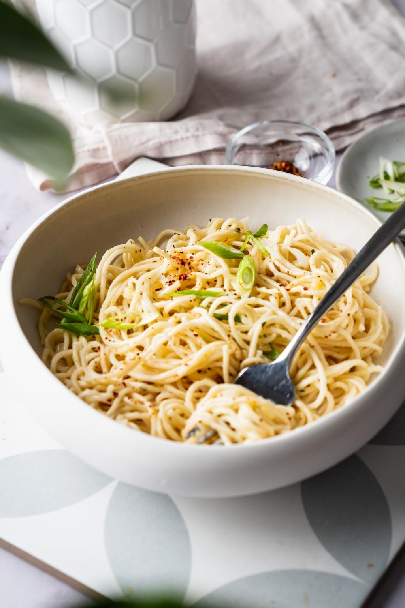

Cheesy Ramen Noodles

Description
Melting cheese in ramen makes for an extremely simple and delicious spin on typical ramen noodles that can be easily made in the college environment.
Ingredients
- 2 cups of water
- 1 (3 ounce) package any flavor ramen noodles
- 1 slice American cheese
Steps
- Gather all ingredients.
- Bring water to a boil in a saucepan. Add ramen noodles and cook until tender, about 2 minutes.
- Pour out water, then stir in seasoning packet and cheese until well blended.
- Voila! It is finished!